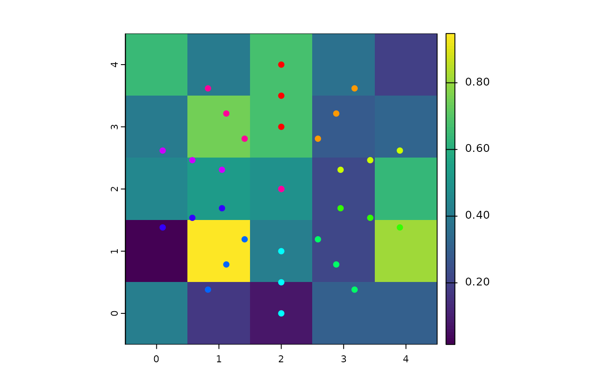

Move the turtles backward of their headings' directions.
bk(turtles, dist, world, torus = FALSE, out = TRUE)
# S4 method for agentMatrix,numeric
bk(turtles, dist, world, torus = FALSE, out = TRUE)AgentMatrix object representing the moving agents.
Numeric. Vector of distances to move. Must
be of length 1 or of length turtles.
WorldMatrix or worldArray object.
Logical to determine if the world is wrapped. Default is
torus = FALSE.
Logical. Determine if a turtle should move when
torus = FALSE and its ending position will be outside of
the world's extent. Default is out = TRUE.
AgentMatrix representing the turtles with updated
coordinates and updated data for their previous coordinates prevX
and prevY.
If torus = FALSE and out = TRUE, world
does not need to be provided.
If a distance to move leads a `turtle` outside of the `world`'s extent
and `torus = TRUE`, the `turtle` is
relocated on the other side of the `world`, inside its extent; if
`torus = FALSE` and `out = TRUE`, the `turtle` moves past the
`world`'s extent; if `torus = FALSE` and `out = FALSE`, the
`turtle` does not move at all. In the event that a `turtle` does not move,
its previous coordinates are still updated with its position before
running `bk()` (i.e., its current position).
If a given `dist` value is negative, then the `turtle` moves
forward.
The `turtles`' headings are not affected by the function (i.e., the
`turtles` do not face backward).Wilensky, U. 1999. NetLogo. http://ccl.northwestern.edu/netlogo/. Center for Connected Learning and Computer-Based Modeling, Northwestern University. Evanston, IL.
https://ccl.northwestern.edu/netlogo/docs/dictionary.html#back
<https://ccl.northwestern.edu/netlogo/docs/dictionary.html#jump>w1 <- createWorld(
minPxcor = 0, maxPxcor = 4, minPycor = 0, maxPycor = 4,
data = runif(25)
)
t1 <- createOTurtles(n = 10, world = w1)
plot(w1)
points(t1, col = of(agents = t1, var = "color"), pch = 16)
t1 <- fd(turtles = t1, dist = 2)
points(t1, col = of(agents = t1, var = "color"), pch = 16)
t1 <- bk(turtles = t1, dist = 1)
points(t1, col = of(agents = t1, var = "color"), pch = 16)
t1 <- fd(turtles = t1, dist = 0.5)
points(t1, col = of(agents = t1, var = "color"), pch = 16)
